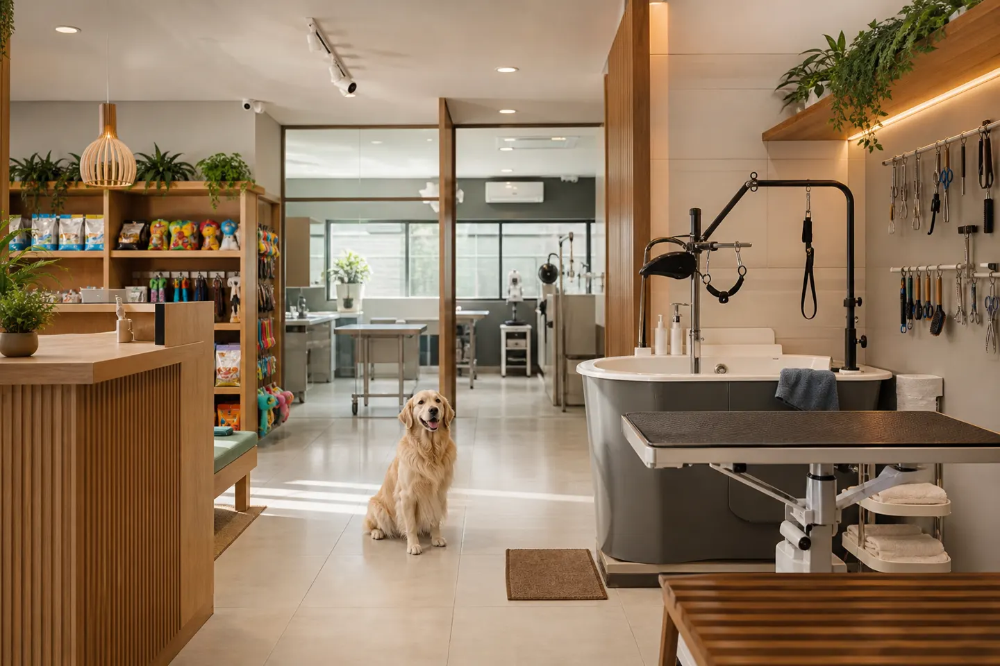

Cuidado e carinho para o seu pet
Pet shop em Goiânia com atendimento de excelência. Equipe atenciosa que trata cada pet com amor e respeito.
A Soft Pet Shop está localizada na Av. Madrid, no Setor Faicalville, em Goiânia. Com nota 5,0 em 71 avaliações no Google, somos reconhecidos pelo atendimento atencioso e cuidadoso. Nosso ambiente é limpo, organizado e acolhedor, garantindo que seu pet volte feliz para casa.
Serviço completo com equipe atenciosa e cuidadosa, sem pressa, para seu pet voltar cheiroso e bem cuidado
Aparação e cuidados específicos com pelos do rostinho e regiões sensíveis
Boa variedade de produtos disponíveis na loja para cuidados com seu pet
Cada pet é tratado com carinho individual e respeito às suas necessidades
serviço a confirmarTrechos de avaliações públicas no Google · nota 5 (71 avaliações)
★★★★★“A equipe é sempre muito educada, atenciosa e rápida na entrega dos pets. O que mais me deixa tranquila é que o Lupi e a Belinha sempre voltam felizes para casa…”
★★★★★“A equipe foi atenciosa desde a chegada e tratou meu animal com cuidado, sem pressa. O ambiente é limpo e organizado, o que passa confiança.”
★★★★★“Atendimento excelente, cuidados com os pets fenomenal, preço justo”
| domingo | Fechado |
| segunda-feira | 08:00–18:00 |
| terça-feira | 08:00–18:00 |
| quarta-feira | 08:00–18:00 |
| quinta-feira | 08:00–18:00 |
| sexta-feira | 08:00–18:00 |
| sábado | 08:00–13:00 |
Conforme Google Maps; confirme feriados pelo WhatsApp.
Av. Madrid, Q.95 - L.16, Sala 02 - St. Faicalville, Goiânia - GO
WhatsApp: +55 62 98292-0161